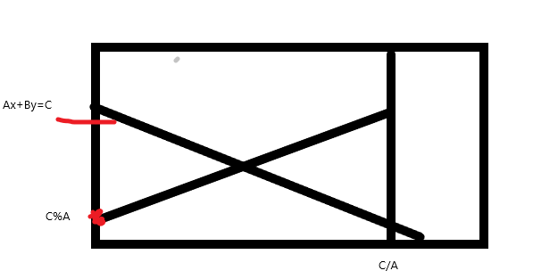

求Ax+By<=C,非负整数对(x,y)的个数
首先令y=0;则x<=(C/A);ans=(C/A)+1;
将Ax+By=C反转之后利用类欧几里得算法：f(a,b,c,n)=∑((a*i+b)/c) (0<=i<=n);求解

反转之后，a=A，b=C%A,c=b,n=C/A;
#include<bits/stdc++.h> #define ll long long #define ull unsigned long long #define bug printf("bug\n"); #define N 1000005 #define pb emplace_back #define fi first #define se second #define sc scanf #define pf printf #define Endl '\n' using namespace std; const ll inf=1e18; const ll mod=1000000007; ll qm(ll a,ll b){ ll ans=1; while(b){ if(b&1)ans=ans*a%mod; a=a*a%mod;b>>=1; } return (ans%mod+mod)%mod; } ll cal(ll a,ll b,ll c,ll n){ if(a==0)return (b/c)*(n+1); if(a>=c||b>=c)return cal(a%c,b%c,c,n)+n*(n+1)*(a/c)/2+(b/c)*(n+1); ll m=(a*n+b)/c; return n*m-cal(c,c-b-1,a,m-1); } int main() { ios::sync_with_stdio(false);cin.tie(0);cout.tie(0); ll a,b,c; cin>>a>>b>>c; cout<<cal(a,c%a,b,c/a)+c/a+1<<endl; return 0; }